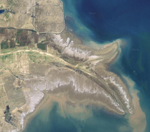
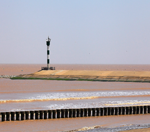
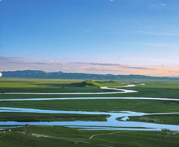
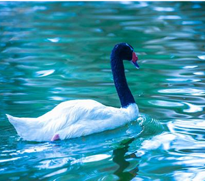
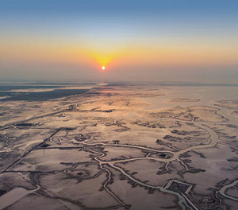

位置境域

黄河三角洲，是指黄河入海口携带泥沙在渤海凹陷处沉积形成的冲积平原。由于黄河入河口历史上多次变迁，一般所称“黄河三角洲”，多指近代黄河三角洲，即以垦利宁海为顶点，北起套尔河口，南至支脉沟口的扇形地带为近代黄 河三角洲，面积约5400平方公里，其中5200平方公里在东营市境内。
黄河三角洲，属油气、囟水、土地资源丰富，中国早期的胜利油田即在区内。为山东省东营市经济发展的广阔空间。 21世纪初，山东省在三角洲基础上，把东南侧潍坊、德州、淄博、烟台市的部分地区规划为“黄河三角洲高效生态经济区”，成为山东省新的经济增长点。
由于位置优越，形成了独特的生态类型，国家已在此建立“山东黄河三角洲国 家级自然保护区”，同时依托湿地生态，旅游产业也得到开发。
西汉以前，黄河三角洲地域均在海水之中。海岸大致在今大山、明集、利津城、 史口、辛店、支脉沟口一线。利津城东南至史口之间有一自然海湾，南北宽约10公里， 东西长40公里，延伸至小营一带。漯水自西流入海湾。利津城西、城南，东营区西南 部为古陆地， 汉代属青州部千乘郡漯沃县、 蓼城县、琅槐县领地。济水在琅槐县境 (今东营区六户附近)入海。
自王莽新朝始建国三年(公元11年) ，黄河来境内入海。至唐景福二年(893年)， 黄河口西去移出境内。八百多年中，黄河在利津城以东的渤海湾边淤积出大片陆地， 蓼城以南的海湾已淤平，海岸线向利津城东北、东、东南方向推进40～50余里。《元 和郡县志》记载，海在渤海县(旧滨县城)东160里，蒲台县(今滨州市南水库)东140里。
清咸丰五年(1855)，黄河复来境内入海后，黄河三角洲继续向渤海推进。据利津 水文站1949～1988年实测资料统计， 黄河输至河口的泥沙年均10亿吨左右，其中约2 4%沉积在大沽零米线(陆地) 以上，约40%沉积在零米线以下的滨海区，其余被海流 输往深海。在黄河尾闾流路不断变迁的过程中，年均造陆3～4万亩，海岸线持续向东 推进。1855～1985年间，尾闾河段实际行水96年，海岸线平均向前推进28.5公里，推 进速率为每年0.3公里。其中1947年前以宁海为顶点的三角洲，计算岸线长105公里， 实际行水57年，平均推进13.30公里，推进速率为每年0.23公里。1947～1985年， 以渔洼为顶点的小三角洲，计算岸线长80公里，实际行水39年，平均推进15.2公里， 推进速率每年0.39公里。清水沟流路在人工控制下河口摆动范围小，淤积影响宽度仅 30公里左右，岸线推进速率为每年1.6公里。黄河三角洲仍在向渤海推进中。
地貌特征

黄河三角洲平原海岸 海岸起自漳卫新河口，东经现黄河口，至支脉河口。
从漳卫新河口至套儿河河口湾东侧之顺江沟口，为古代黄河三角洲平原海岸的一部分。海岸曲折多弯，曲折率达3.8。潮滩由粘土质粉砂及粗粉砂组成。向海平均坡降小于1/10000。潮滩宽度自西向东变大，漳卫新河河口外宽约6公里，至套儿河河口湾内滩面宽达22公里，是渤海沿岸潮滩宽度最大的地方，潮水沟规模最大，分布密集。
在潮滩的平均高潮线上缘，分布着一列贝壳及贝壳砂组成的“岛链”，西起漳卫新河口，东至小沙，长约37公里，由50多个不连续的新月形贝壳及贝壳砂岛组成，向海略成弧状突出。此外，在潮滩上尚分布有许多残留高地，为古黄河三角洲平原残迹，年内大潮不能淹没，群众称为“坨子”。
滨海潮土、滨海盐土亚区(Ⅳ1) 位于黄河河口，为近代黄河河口的扇形堆积平原，地势低平，土壤因受近代黄河泛滥沉积影响多形成滨海潮土，其特点是在原来含盐量很高的滨海盐渍物质上，覆盖了一层源自黄土高原的黄河冲积物，厚度约1～4米，土质比较肥沃，自然植被生长较好，曾有大片天然柳林与柽柳林。土壤垦殖后多种小麦、大豆、高粱。若土壤开垦不当或植被破坏，盐分极易上升地表，滨海潮土则逐步退化，不少耕地已盐化撩荒，形成了滨海盐土。依盐分含量不同，生长各类盐生植被。
在滨海防潮堤内侧滩地分布有滨海滩地盐土，地表大都具有较厚的盐结皮，通体盐分含量大于1.5%，多为光板地，仅在地形较低处或冲蚀的浅沟内，可见黄须莱、柽柳、盐蒿、马绊草、二色补血草生长，生物累积微弱，有机质含量低于0.5%。除挖沟池，用于养虾或盐业外，尚生有小面积芦苇可用于副业生产。

该小区近海地区土壤含盐量较高，以滨海潮盐土为主，林木分布受到土壤、地形限制，以致植物种类贫乏，植被类型单纯，顶极群落主要为盐化草甸和一年生盐生植物群落。
此处有以翅碱蓬(黄须菜)为主的盐生草甸、獐茅(马绊草)为主的盐生草甸、羊草、碱蓬、茵陈蒿等。在水分充足含盐量高处，盐角草常占优势，水分良好含盐量低处则分布着以白茅、罗布麻、芦苇为主的群落。 离海较远、土壤含盐量稍低处，大部分已垦为农田。村落附近散生灌木中旱柳占90%，其他耐盐树种还有刺槐、榆、臭椿、加拿大杨、侧柏等。黄河三角洲局部有天然生长的旱柳林。柽柳呈灌木状分布于滨海湿地，形成天然海防林带。
该小区农田因土壤含盐量较高，耕作粗放，产量不高。主要作物为小麦、玉米、高粱、棉花等。果树以枣为常见。野生纤维植物资源有罗布麻。

该区内哺乳动物仍以中、小兽类为主。
食虫目4种，区内普遍可见。区内小型啮齿类中黑线仓鼠、大仓鼠、小家鼠和褐家鼠等为害严重；黄鼠穴居在质地疏松的冲积土壤中，此区为山东境内唯一有黄鼠分布的地区；鼢鼠亦以平原地区为多见。
由于广大的黄河三角洲冲积平原及沿黄两岸地势低洼，多湿地和沼地，因而鸟类十分丰富,共有鸟类283种。本区珍贵保护鸟类普通种有长耳稀有种有燕隼、小天鹅等31种。在沿海低洼地区及鲁北盐荒地，鹭、鹬、沙锥等涉禽或沼地鸟特别多见。银喉长、尾山雀、小星头啄木鸟仅限于此区繁殖。
该区动物的分布有明显的区域性，可根据生境及动物分布特点划分成两个类型，即西部和南部平原农耕地带生态动物群、北部黄河三角洲及沿海滩涂地带生态动物群。
气候特征
黄河三角洲地处中纬度，位于暖温带，背陆面海，受欧亚大陆和太平洋的共同影响，属于暖温带半湿润大陆性季风气候区。基本气候特征为：冬寒夏热，四季分明。春季干旱多风，早春冷暖无常，常有倒春寒出现，晚春回暖迅速，常发生春旱；夏季，炎热多雨，温度高湿度大，有时受台风侵袭；秋季，气温下降，雨水骤减，天高气爽；冬季，天气干冷，寒风频吹，雨雪稀少，主要风向为北风和西北风。
黄河三角洲四季温差明显，年平均气温11.7-12.6℃，极端最高气温41.9℃，极端最低气温-23.3℃；年平均日照时数为2590-2830小时；无霜期211天；年均降水量530-630mm， 70%分布在夏季；平均蒸散量为750-2400mm。
水文特征

黄河三角洲地带水系发育，为马颊河、徒骇河、黄河、小清河、弥河、白浪河、潍河等河流下游入海处。除黄河常年侧渗补给地下水外，其余河流仅汛期补给地下水。
三角洲西部，以河湖相、海相地层为主，部分有冲积层。上部普遍分布有矿化度大于2克/升的咸水，下部有深层淡水。深层淡水顶界面200～500米，局部50～200米，由西南向东北渐深。含水层以粉细砂、细砂为主，部分为中细砂，颗粒自西南向东北渐细，层厚20～40米，一般弱至中等富水，地下水承压自流。黄河三角洲地形较平坦，大气降水为主要补给来源。地处黄河、徒骇河等河流下游入海处，河流经常改道、泛滥，地下水位抬高，地下水径流滞缓，蒸发为其主要排泄方式。
【左图：山东东营,航拍黄河三角洲国家级自然保护区内壮观的河流脉络】
黄河三角洲地带，地表沉积物颗粒细小，地下水水平运动条件极差，南部冲积层地下水对该区地下水的补给微弱，垂直蒸发作用又强烈，海水影响明显，所以地下水基本处于逐渐浓缩状态，形成与海水水化学特征基本相似的氯化钠型水为主的高矿化水，矿化度高达50克/升左右。在垂直方向上，地下水水化学也有一定的变化规律。
黄河口的黄河三角洲是一巨大的扇形堆积体，在地质构造上为一向东倾斜的东西向凸起，黄河的年平均输沙量为10.8亿吨，其中的1/5在口门附近落淤，形成河口沙嘴和由粗粉沙组成的三角洲。在黄河入海处，河口沙嘴向海推进的速率为每年2～3公里，黄河三角洲的水下前缘坡折可延伸至水深15米左右。黄河入海的泥沙向3个方面扩散：大部分随余流转入莱州湾；一部分随河口射水冲入渤海深水区；少部分随弱余流进入渤海湾。
徒骇河，由西南向东北流入山东省境，经山东的莘县、南乐(河南省)、阳谷、聊城、茌平、高唐、禹城、齐河、临邑、济阳、商河、惠民、滨县和沾化等14个县市，于沾化区套儿河口注入渤海。河长436公里，流域面积13902平方公里，其中河南省流域面积602平方公里，河北省4平方公里，山东省13296平方公里。河道平均比降为0.11/1000。由于流域内地势向东北倾斜，支流多由右岸注入。该河河口是黄河三角洲的北界。
黄河东营段，上起滨州界，自西南向东北横贯东营市全境，在垦利县东北部注入渤海， 境内河长138千米，属近口段和入海口，在全河治理工作中具有特殊的地位和作用。黄河东营段上界起自滨州、东营交界处，左岸为利津县北宋镇董王庄西南县界，右岸为东营区龙居镇老于村西区界。河道由西南向东北贯穿东营市全境，流经利津县、东营区， 在垦利县东北部注入渤海。
潮河，位于黄河故道与徒骇河之间。为解决该流域排涝受徒骇河洪水顶托，1965年人工开挖而成的独流入海排涝河道，因其下游汇入洼拉沟等滨海潮沟而得名。 干流起自滨州市双西村的西沙河，东北经沾化县，入东营市河口区，流经河口区太平乡、新户乡，至洼拉沟入海。河道全长73.5千米，境内河长24千米，其中20千米为东营市河口区与滨州市沾化县的界河。 流域面积1408平方千米， 境内流域面积427.7平方千米。排涝标准按鲁北1964年雨型设计，河道最大排涝流量为188.0立方米每秒。市境内支流有褚官河、太平河。
神仙沟，为自然形成的入海河道。1934年8月，黄河于涯东村附近决口，水流东北，先由老神仙沟入海， 再形成神仙沟、甜水沟、宋春荣沟3股入海。60年代末期，胜利油田在孤岛地区开发建设，利用原河道陆续开挖、疏浚，形成现河道。主要承担孤岛镇、仙河镇、济军生产基地及滨海区4000口油井、1600口注水井的排水任务。 神仙沟原河道长38千米。自1996年上游18千米建成带状型水库后，原神仙沟支流红旗沟加上原神仙沟下游20千米统称为神仙沟， 全长30.0千米，流域面积350平方千米，其支流有2条，新卫东河和桩呈公路边沟，神仙沟排水流量为22～102立方米每秒。
区域资源
油气：黄河三角洲地下是个古老的盆地，地质上称为济阳坳陷。过去外国人断言“华北无油”，而胜利油田20多年来开发的事实证明，那里不仅有油气储藏，而且储量相当丰富。在渤海湾地区进行地震勘探和钻井勘探，已经发现了桩西、五号桩、垦东和青东4个含油地区，主要分布于车镇、沾化、埕北、桩东和青东等5个凹陷的700多平方公里范围内。
东营市是胜利油田主产区，至2017年底，胜利油田已找到不同类型油气田81个，累计探明石油地质储量54.84亿吨；投入开发油气田74个，累计生产原油11.76亿吨。全年新增探明石油地质储量3459万吨、控制石油地质储量6641万吨、预测石油地质储量8040万吨。
【左图：胜利油田作业设备】
卤水：黄河三角洲两翼地下卤水分布区，东至徒骇河东岸，西至沙沟子东，南界时家台子、马山子，北界可能延伸至海区内。地下卤水分布总面积约1794平方公里。 据2017年统计数据，东营全市地下卤水资源量58.43亿立方米，油页岩资源量1544.6亿吨，矿泉水可采资源量365万立方米/年，砖瓦黏土资源量28.44万立方米。
油气：山东海岸带地下热水资源也较丰富，有多处温泉。其中胶东半岛即有7 处：牟平1处(龙泉汤)，威海市内两处(温泉汤、南海滨温泉)，文登县两处(大英汤、北汤)，乳山县1处(小汤)。地热资源主要分布在以东营城区为中心的东营潜凹区和以河口—孤岛—仙河为中心的车镇潜凹区以及垦利、广饶、利津部分地区，据2017年统计数据，分布面积约5655平方千米，查明地下热水资源量3447亿立方米，是全省地热资源最丰富的地区。
矿产资源：岩盐主要分布在东营凹陷地带，估算资源量1096.79亿吨。煤的发育面积约630平方千米，主要分布于河口区西部，估算资源量61.8亿吨。
土地：现代黄河三角洲位于黄河入海口附近，以垦利县西部的宁海为三角洲的内缘顶点，西北至套尔河口，东南至淄脉沟前缘，占全省土地面积3.3%。土壤质地以轻壤土居多，新淤地比较肥沃，但由于淡质土层之下为老盐土和高矿化度的潜水，故开垦利用不当时土壤容易盐渍化。
区域经济
2017年，东营市全区实现地区生产总值（GDP）499.7亿元，农林牧渔业增加值19.3亿元，其中，农业增加值85236万元，同比增长3.6%；林业增加值3010万元，同比增长3.5%；牧业增加值52888万元，同比增长4.0%；渔业增加值34586万元，同比增长1.4%；农林牧渔服务业增加值17019万元，同比增长20.8%。全年规模以上工业企业124家。实现工业总产值1003.1亿元，全年完成固定资产投资545.1亿元，全年实现社会消费品零售总额393.8亿元，全年实现预算内财政收入285581万元，全年共有46家高新技术企业，其中新认定高新技术企业22家。据抽样调查，全年城镇居民人均可支配收入为45394元，全年农村居民人均可支配收入为18634元